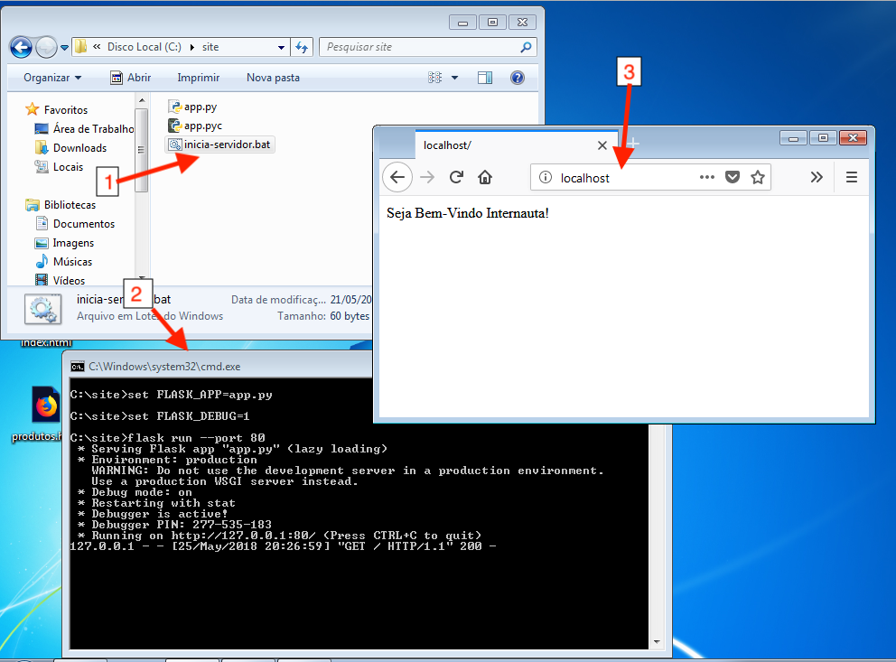

Segue uma introdução ao framework web flask. Será apresentado: a estrutura básica do flask; a estrutura de templates e arquivos estaticos; e o sistema de rotas do flask.
Um projeto Flask, precisa da seguinte estrutura básica:
Segue um exemplo do código mínimo para o arquivo app.py:
#coding: UTF-8 from flask import Flask app = Flask(__name__) @app.route("/") def index(): return "Seja Bem-vindo Internauta!"
Vamos detalhar o que se vê em cada linha de código acima:
Linha 1: temos um código padrão de todo arquivo python. Esse código informa que estamos utilizando a codificação de texto UTF-8. Se não colocassemos essa linha não poderíamos colocar textos com palavras acentuadas em nosso código.
Linha 2: esse código é responsável pela importação da classe Flask (F maiúsculo) cuja origem é a biblioteca de nome flask (f minúsculo).
Linha 4: esse código faz a inicialização do framework Flask através da classe Flask que importamos na linha anterior. A classe é instanciada e armazenada na variável app.
Linha 6: esse código faz a configuração da rota padrão do site utilizando a variável app. Ou seja, informamos que queremos configurar uma rota ("route" em inglês) de acesso ao nosso site e que essa rota possui o endereço igual a "/".
Linhas 7 e 8: definem uma função python de nome index que irá responder a todos os pedidos de acesso a nossa rota padrão "/" com uma página web cujo o conteúdo é a mensagem "Seja Bem-vindo Internauta!".
Abaixo segue um exemplo do arquivo iniciar-servidor.bat:
set FLASK_APP=app.py set FLASK_DEBUG=1 flask run --port 80 --host 0.0.0.0
Para visualizar o site, pela primeira vez, siga os seguintes passos:
A ordem de execução desses passos pode ser observada na imagem a abaixo:
A estrutura básica de um projeto Flask só necessita desses dois arquivos (app.py e inicia-servidor.py). Essa estrutura simples é bem versátil e pode ser muito útil para montar sites pequenos.
Em projetos de sites grandes precisamos utilizar muitos arquivos HTML, arquivos de estilos CSS, arquivos de linguagem Javascript e outros tipos de arquivos genéricos como imagens, txt, doc, pdf, etc. Nesses casos, a estrutura básica do flask é insuficiente, e para fazer sites maiores precisamos de uma estrutura mais organizada e alguns recursos extras.
O framework Flask resolveu essa questão da organização dos arquivos criando dois diretórios especiais: a pasta templates e a pasta static.
Pasta templates: no framework flask a pasta templates é o local onde devemos colocar nossos arquivos html que são renderizados pelo python. Todos os aquivos html devem ficar dentro dessa pasta ou em sub-pastas dela.
Pasta static: qualquer outro arquivo (css, js, png, pdf, mp3 etc.) que necessitemos deixar para download através do nosso site deve ser colocado dentro da pasta static.
Arquivos que forem colocados nesta pasta podem ser acessados no website atraves do endereço "/static/". Por exemplo, se colocarmos um arquivo chamado imagem.jpg na pasta static podemos acessar essa imagem no endereço "/static/imagem.jpg".
Ao acessar um site feito com o framework flask, o usuário somente terá acesso as rotas de URLs que forem adicionadas no arquivo app.py e aos arquivos na pasta "static" que são publicados automaticamente.
Se o usuário digitar um endereço que não foi previamente registrado como rota (no arquivo app.py) o servidor vai responder com uma mensagem de erro (de código 404) informando que a página web solicitada não existe.
Para criarmos uma rota usamos o comando @app.route() seguido de uma função python que tem como objetivo retornar um texto html que representa a pagina web daquela URL.
Para exemplificar vamos criar um projeto com três páginas web, ou seja, com três rotas:
Para criar esse projeto siga os passos abaixo:
Abaixo segue o código do arquivo app.py com as rotas:
#coding: UTF-8 from flask import Flask, render_template app = Flask(__name__) @app.route("/") def pagina_index(): return render_template("index.html") @app.route("/produtos/") def pagina_produtos(): return render_template("produtos.html") @app.route("/clientes/") def pagina_clientes(): return render_template("clientes.html")
Abaixo segue o código do arquivo index.html:
<!DOCTYPE html> <html lang="pt-br"> <head> <title>Projeto 1</title> <meta charset="utf-8"> </head> <body> <h2>Seja bem-vindo visitante!</h2> <p>Para ver os nossos produtos acesse: <a href="/produtos/">produtos</a> <p>Para ver depoimentos dos nossos clientes acesse: <a href="/clientes/">clientes</a></p> </body> </html>
Abaixo segue o código do arquivo clientes.html:
<!DOCTYPE html> <html lang="pt-br"> <head> <title>Projeto 1 - Clientes</title> <meta charset="utf-8"> </head> <body> <h2>Depoimentos de Clientes</h2> <p>Cliente Maria: - "Os funcionários são muitos atenciosos!"</p> <p>Cliente José: - "Eles dão grandes descontos em compras à vista!"</p> <p>Cliente João: - "Esta loja é muito boa!"</p> <p>Cliente Ana: - "Vendem ótimos produtos!"</p> <br> <p><a href="/">voltar para loja</a><p> </body> </html>
Abaixo segue o código do arquivo produtos.html:
<!DOCTYPE html> <html lang="pt-br"> <head> <title>Projeto 1 - Produtos</title> <meta charset="utf-8"> </head> <body> <h2>Produtos Mais Vendidos</h2> <table> <tr> <th> Produto </th> <td>Preço</td> </tr> <tr> <td>Geladeira</td> <td>R$ 900</td> </tr> <tr> <td>Fogão</td> <td>R$ 500</td> </tr> <tr> <td>TV 50"</td> <td>R$ 1600</td> </tr> </table> <br> <p><a href="/">voltar para loja</a><p> </body> </html>
Após criar todos os arquivos, dê um duplo clique no script iniciar-servidor.bat para iniciar o servidor do projeto e teste o projeto acessando a url http://localhost/
Veja o vídeo onde mostro a construção desse projeto:
Flask - QuickStart: http://flask.pocoo.org/docs/1.0/quickstart/
Flask - Rotas: http://flask.pocoo.org/docs/1.0/quickstart/#routing
Flask - Templates: http://flask.pocoo.org/docs/1.0/quickstart/#rendering-templates